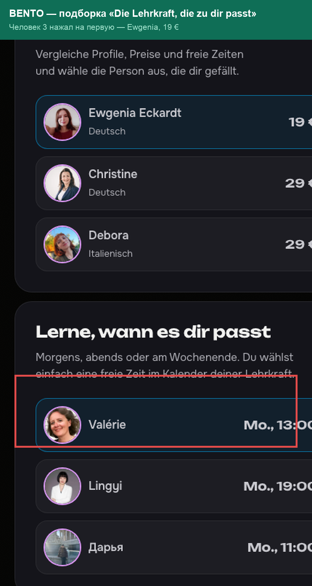

23 ноября 2026 · кампания на учеников · страница ollinter.com/de/for/languages
С рекламы на сайт зашло четыре человека, все с телефона.
Двое не нажали вообще ничего. Один открыл карточку преподавателя и замер.
Один посмотрел язык и вернулся назад. До кнопки брони не дошёл никто.
Потрачено
21,90 €
Кликов в Meta
10
Дошли до сайта
4
Целевых действий
0
Про регистрацию, которую показала Meta. Она не отсюда.
Сегодня регистрировались на странице преподавателей — трое заполняли анкету.
Meta приписала одну из них этой кампании, потому что человек сначала кликнул по её объявлению,
а позже в тот же день зарегистрировался как преподаватель. Для кампании на учеников это чужая конверсия.
И главное: цель этой кампании — не регистрация, а событие TeachersClick, нажатие кнопки.
За сегодня этого события ноль.
Четыре человека по шагам
Человек 1
Германия · телефон
Открыл страницу Ноль кликов. Закрыл.
Даже не прокрутил настолько, чтобы на что-то нажать.
Человек 2 — искал по языку
Германия · телефон
Открыл страницу Долистал до блока с языками
Нажал на язык Вторая или третья плитка в блоке «Welche Sprache möchtest du lernen?»
Открыл страницу этого языка Ноль кликов
Вернулся назад на общую страницу Снова ноль кликов. Ушёл.
Единственный, кто шёл не через лица, а через язык. Зашёл в нужный раздел, ничего там не выбрал и вернулся.
Человек 3 — выбрал преподавателя
Германия · телефон
Открыл страницу Долистал до блока с карточками преподавателей
Нажал на преподавателя Позиция с 4-й по 10-ю в блоке «Finde eine Lehrkraft»
Открыл карточку преподавателя Ноль кликов. Ушёл.
Самый тёплый за день. Долистал почти до середины страницы, выбрал человека — и на его карточке не нажал ничего.
Человек 4
Страна не определилась · телефон
Открыл страницу Ноль кликов. Закрыл.
Куда нажимали

Так выглядит блок с карточками преподавателей — туда пришёлся клик Человека 3.
Воронка за день
Шаг
Человек
Осталось
Кликнули по рекламе (данные Meta)
10
100 %
Дошли до сайта
4
40 %
Нажали хоть что-то на странице
2
20 %
Открыли карточку преподавателя
1
10 %
Сделали что-то в карточке
0
0 %
Нажали кнопку брони
0
0 %
Что видно за два дня
Вчера было пять человек, сегодня четыре. Картина повторяется один в один:
Половина уходит, не нажав ничего. Вчера двое из пяти, сегодня двое из четырёх.
Кто нажимает — нажимает на лицо. Вчера трое, сегодня один. Из разных блоков страницы, но всегда на преподавателя.
Карточка преподавателя обрывает всех. За два дня туда зашли четыре человека и ни один не сделал ни одного клика.
Все заходы только с телефона. Девять из девяти.
Что проверить
Открыть карточку преподавателя с телефона глазами немецкого ученика: видна ли кнопка брони сразу, есть ли свободное время на ближайшие дни, понятна ли цена.
Админка в разделе Campaigns сама считает свободных преподавателей на неделю вперёд — их 10. Если у выбранного окон нет, нажимать просто нечего.
Цель кампании стоит на кнопке TeachersClick. За два дня этого события не было ни разу — значит алгоритм учится вслепую и не понимает, кого искать.